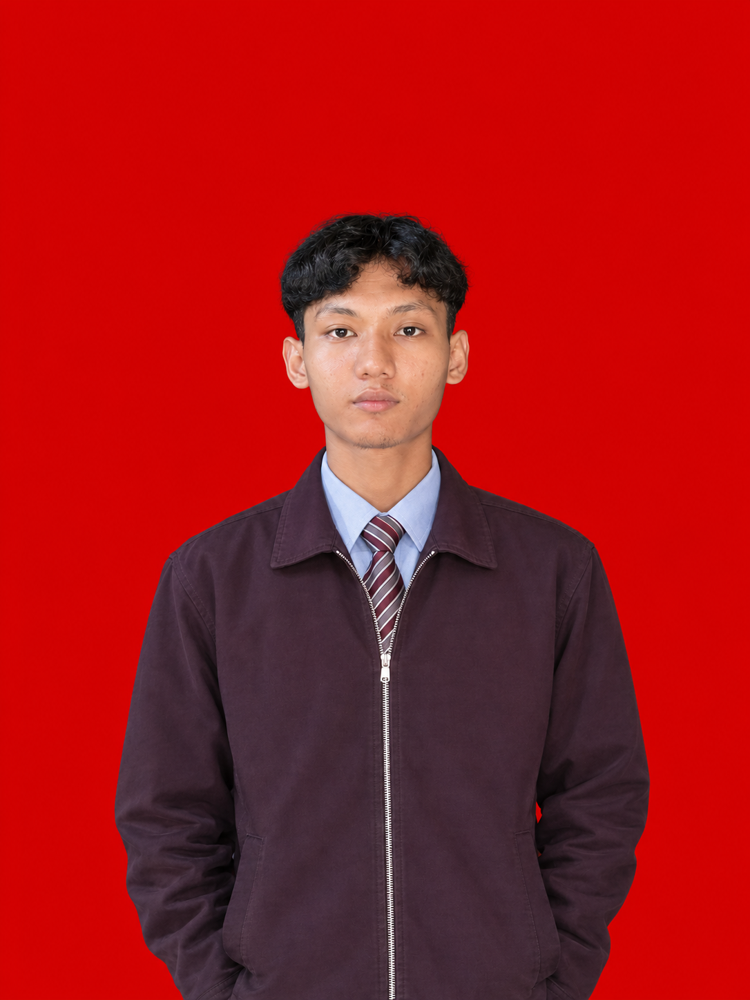

Data Analyst, dari Bekasi
Fresh Graduate Sistem Informasi, Bekasi
Saya mengembangkan aplikasi web, menganalisis sistem, dan mengolah data untuk menghasilkan solusi yang sesuai dengan kebutuhan pengguna. Saya senang memahami proses bisnis, menemukan pola dari data, dan menerjemahkan kebutuhan menjadi solusi digital yang efektif.
IPK 3,59/4.00. Skripsi: Integrasi Naive Bayes dan Whale Optimization Algorithm dalam monitoring pemanfaatan Dana BOS.
Klasifikasi permohonan kebutuhan dengan akurasi 91,76%, naik dari 86,67% setelah dioptimasi Whale Optimization Algorithm.
Merangkum penjualan Rp750,5 juta dan profit Rp143,6 juta dari 64.568 produk dalam satu dashboard Looker Studio interaktif.
Mengurangi data dari 2.361 menjadi 1.995 baris dengan menghapus 366 duplikat dan menyeragamkan kategori di PostgreSQL.
Membangun dashboard Tableau interaktif untuk tren kasus, kematian, dan kesembuhan per provinsi dari data yang dibersihkan dengan SQL.
Memvisualisasikan pola keterlambatan per maskapai dan wilayah di Tableau sebagai bahan presentasi ke stakeholder.
SQL (PostgreSQL, MariaDB), DBeaver, Excel (Pivot Table, Formula), Looker Studio, Tableau, Power BI, Data Cleansing, Exploratory Data Analysis, Storytelling with Data
Saya mencari magang dan posisi entry-level. Biasanya saya balas dalam sehari.